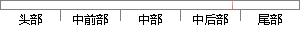

com后台进行开发，目前小程序提交审核已经通过，开发版本为1.
片段位置图

相似结果|
1
原句片段：com后台进行开发，目前小程序提交审核已经通过，开发版本为1.
相似片段 1：如果需要将某个开发版本提交审核,你需要进行以下操作: 点击开发版本右侧的「提交...如果你的小程序审核通过,你就可以进入公众平台小程序后台,点击「开发管理」,在「...
|
※ 片段修改建议 ※
近似词参考：- 后台：背景
- 进行：举行
- 开发：开辟
- 目前：今朝 现在
- 程序：法式 步伐
- 审核：考核
- 已经：已
- 通过：经由过程
- 开发：开辟
系统自动生成语句：com背景举行开辟，今朝小法式提交考核已经由过程，开辟版本为1.
注：本片段修改建议为系统自动生成，仅供参考。